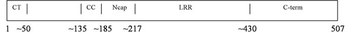

PIRL (Plant Intracellular Ras-group related LRR)
PIRLs are plant genes discovered by Dan Vernon and coworkers that represent a heretofore undescribed family of plant LRR (leucine rich repeat) proteins. The PIRL proteins are more closely related to Ras-group animal LRR proteins than any plan proteins. LRR motifs often function as scaffolds to mediate protein-protein interactions.
We are working to determine the three-dimensional structure of PIRL proteins, which has the following potential benefits:
1. Direct structural comparison to better-described animal LRR proteins may improve our functional understanding of the PIRLS.
2. Domain structure may provide functional information, in particular whether the N-terminal region of the the PIRLs function themselves as mediators of protein-protein interactions.
Database searches suggest the following for PIRL1 domain organization:

CT = predicted chloroplast targeting sequence
CC = predicted coiled-coil region
Ncap = putative N-cap for LRR domain
LRR = leucine-rich repeat
C-term = the remainder of the protein
We have tried to express and purify several different combinations of these various parts. Generally the proteins express very well in E. coli, but are insoluble. They can be refolded into soluble protein, but this is aggregated into a large megacomplex of > 10 subunits.